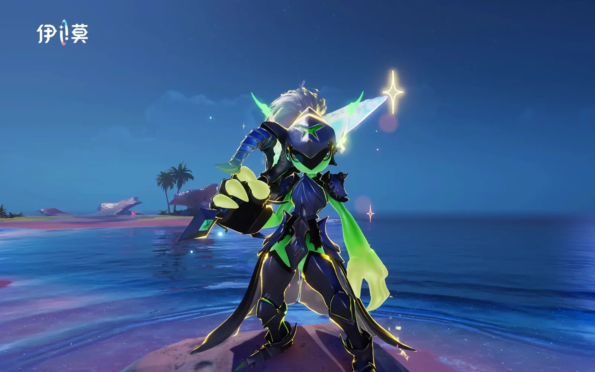
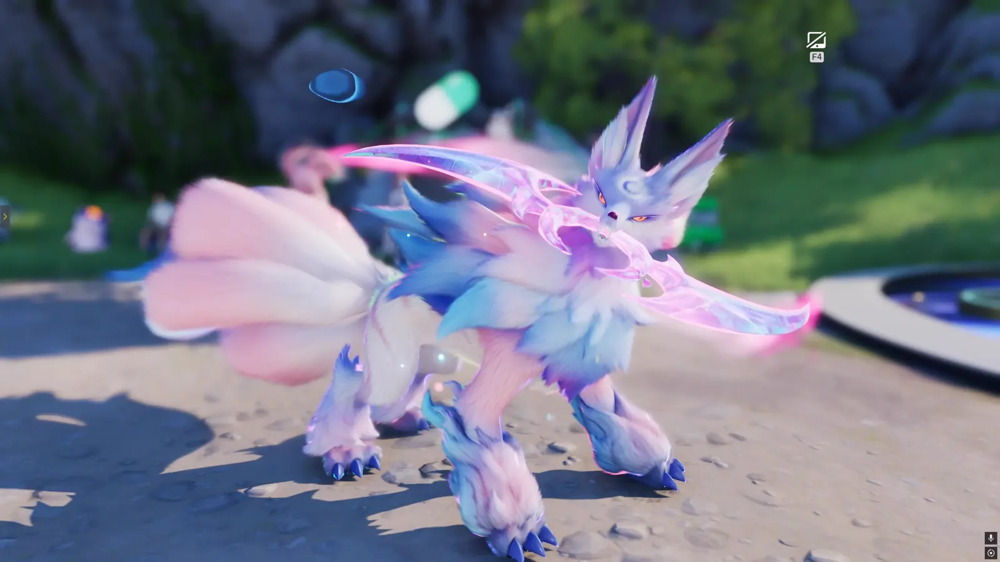
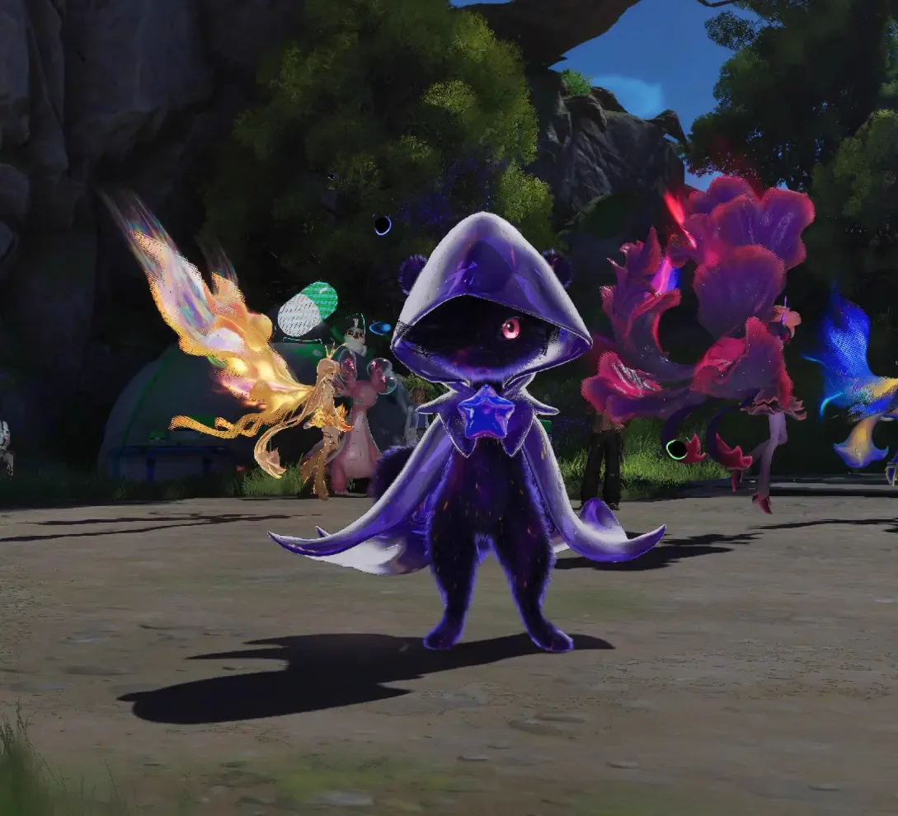
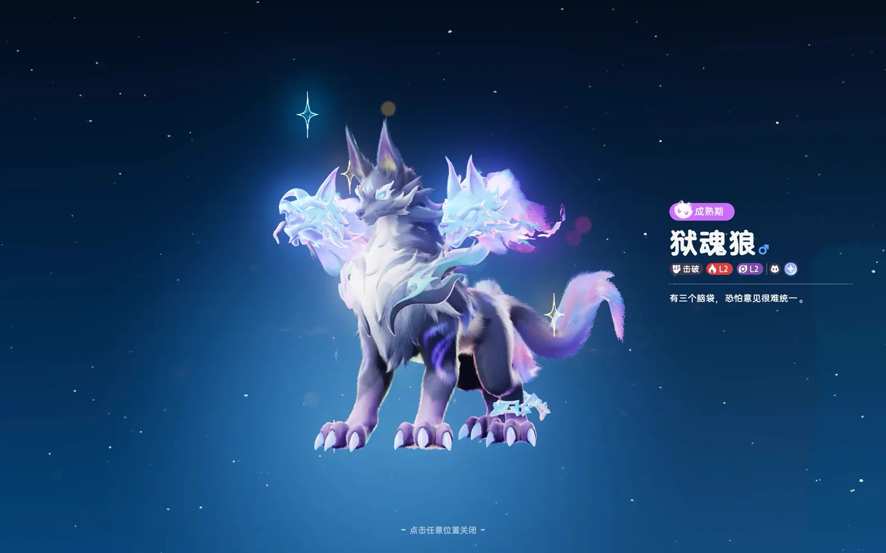

Home首页 / Guides攻略 / Prismana, Sparkling, Umbral and the Shiny Star: Aniimo's Four Rare Terms, Explained《伊莫》四个词条：虹光、闪耀、幽黯、闪亮之星都是什么意思
Checked核对于 October 9, 20262026 年 10 月 9 日
Prismana, Sparkling, Umbral and the Shiny Star: Aniimo's Four Rare Terms, Explained《伊莫》四个词条：虹光、闪耀、幽黯、闪亮之星都是什么意思
The two appearances and the one rating that decide whether an Aniimo counts as finished: which of them is limited, which is luck, which is nearly free, and the threshold that actually stops people.想让一只伊莫算得上毕业，标准是「双外观加一个闪亮之星」。这四个词条各管一段：哪个限量、哪个靠运气、哪个几乎白送，以及真正卡住大多数人的那道门槛。
Getting an Aniimo to a finished state comes down to two things: two appearances, and a Perfect Potential rating on top of them. Prismana, Sparkling and Umbral are the appearances. The shiny star is the rating.《伊莫》里想让一只伊莫算得上毕业，标准就一条：双外观，再配上闪亮之星的金色资质。虹光、闪耀、幽黯说的是外观，闪亮之星说的是资质。
The four terms look tangled because they sit on different axes and each one is limited in a different way — Prismana is a finite list, Sparkling is a dice roll, Umbral is nearly free but easy to lose, and the rating is the one that actually stops most people. Take them in that order and there is a route here rather than a pile of jargon.这四个词条看着绕，其实各管一段 —— 虹光限量，抓到一只就少一只；闪耀靠运气，砸多砸少全看脸；幽黯最好拿，但有一个不能踩的坑；真正卡住大多数人的，是最后那个资质。把它们按这个顺序理清楚，一只伊莫该怎么养，心里就有数了。
Prismana: a finite list, and one pick you do not get twice虹光：限量，那只自选别乱选
Only some species have a Prismana Form, and the list does not grow: the publisher's own index prints one for 25 of its 86 entries, and every one of those also has a regular form. There are three ways to end up with one.虹光形态的伊莫种类是限量的，能拿到哪些，翻一遍虹光伊莫图鉴就清楚 —— 官方总表 86 只里只有 25 只印了虹光形态，而且每一只都有普通形态。想凑齐它，一共三条路。
The Prismana Pact. One free pick, claimed once at Wayfarer I, and the only decision in this guide you cannot walk back. Take whatever you like the look of; this is not where the planning should go. There is one thing to know first: a creature taken from the Pact cannot afterwards be given a Sparkling appearance with a Sparkling Cube, so if you meant to build around it, that rules it out of the double-appearance route. Picking for use instead of for looks, take Glacy (Water · Ice · Healer) — the healer you will still want in the party at the end.第一条是 Prismana 契约的自选，只有一次机会，在 Wayfarer I 领取，也是这份攻略里唯一一件做了不能反悔的事。选自个儿看着顺眼的就行，不用为了养成纠结太久。但有一件事得先知道：契约里选的这一只，之后没法再用闪耀立方刷出闪耀形态 —— 要是打算把它练成主力，这一点就直接把它排除在双外观之外了。真考虑实用性，直接拿 莹冰龙（Glacy，水 · 冰 · 治疗），那是队伍里少不了的那只治疗。
Nurture a region's Bloom until its Prismatic Energy is full. The Prismana spawn there is then guaranteed — there is nothing to hunt for, you fill the bar and catch what arrives.第二条是把每个区域的地脉滋养充满。满了必定刷出本区域的虹光伊莫，直接上去抓就是。
Operation: Egg Heist. Exchange what you collect there for Prismana eggs; whatever hatches already has the form on it.第三条在抢弹大作战里。攒够了兑换虹光弹，孵出来的伊莫自带虹光形态。
Prismana does not stay rare. The longer you play the more of them you will have accumulated, and filling in that part of the collection is not hard — which is why it is the cheapest of the three appearances and the one worth settling first.虹光伊莫不会一直是稀罕物。玩得越久，手头攒的越多，想把图鉴点满并不难 ——所以三种外观里它最便宜，也最该先定下来。

Sparkling: thirteen classes, four ways in闪耀：13 档稀有度，四种拿法
A Sparkling appearance is not one thing. It comes at different rarity classes — thirteen of them — so what you are rolling for is not whether, but which. Four routes lead to one.闪耀外观不是一件事，它分不同的稀有度，总共 13 类 —— 所以掷的不是「有没有」，而是「哪一档」。拿它的方法有四种。
Catch with a Sparkling Cube. The class is entirely random, so this is luck rather than a plan. There is one economical move in it, though: spend the Cube on a Prismana you have already found, and that one catch comes out with both appearances on it.第一种，用闪耀立方去捕捉伊莫，出的稀有度完全随机，纯拼运气。这里有个又省又划算的做法：拿立方去抓虹光形态的伊莫，一只能同时拿到双外观。
Apply a Sparkling Sigil. This gives the appearance outright. If it lands in a colour you do not want, the same Sigil exchanges for Sparkling Pigment, the item that changes a Sparkling style — and Pigment will not roll the style you are already on, so it always moves you somewhere.第二种，用闪耀印记给伊莫补上闪耀形态。要是补出来是不喜欢的颜色，闪耀印记还能兑换成闪耀之彩，专门用来给伊莫换色；而且闪耀之彩不会掷回它现在这一款，所以一定换得动。
Hatch a Sparkling egg. Whatever comes out of it already carries the appearance.第三种，孵化闪耀伊莫弹，孵出的必定带闪耀外观。
Find one in the field. Catching Aniimo on the map the ordinary way, there is a very small chance that the individual you run into already carries a Sparkling trait.第四种，在地图上直接抓伊莫时，有很低的概率碰上自带闪耀特质的个体。
Do not spend Sparkling Cubes casually. Every Aniimo can be given the appearance, the game keeps adding new ones, and holding a few back for whatever arrives next is the safer position to be in.闪耀立方不要轻易花掉。每只伊莫都能赋予闪耀外观，往后还会出新伊莫，留几个给后面再抓更稳。

Umbral: the easiest one, and the one trap幽黯：最好拿，但别让它进化
An Umbral appearance is the least rare of the three and the easiest to get. Nurture at a Bloom and an Umbral Aniimo can turn up — the odds are good, and you catch it like anything else. What you catch that way also arrives with Perfect Potential already on it, which is the part worth noticing.幽黯（Umbral，也常写作幽暗）形态的珍稀度最低，也最好拿。滋养地脉花就有概率出幽黯伊莫，直接抓就行，出的概率还挺大，而且逮到的资质一定是闪亮之星。
There is one trap in it. Do not evolve an Umbral Aniimo and do not change its form — the dark tint is stripped the moment you do, and it does not come back. If there is an Umbral you actually want, take it to its final form first, and then go and catch a second one with a Sparkling Cube. That is the route to a double appearance on the individual you were going to build anyway.它只有一个坑：别让幽黯伊莫进化，也别转换形态 —— 一旦进化，幽黯外观就没了，而且回不来。真相中了某只幽黯伊莫，先把它养到最终形态，之后再拿闪耀立方去捕一次 —— 这样也能凑出双外观。

The shiny star: the rating, and the real finish line闪亮之星：资质才是毕业线
The last of the four is not an appearance at all. Perfect Potential — the shiny star — describes an Aniimo's Potential: the roll it was born with, fixed the moment you catch it, and separate from anything training adds later. Potential comes in four ratings, and this is the top of them.最后一个词条形容的不是外观，是伊莫的资质，也就是俗称的先天灵根 —— 它出生时就定下，捕捉那一刻就固定了，和后天养成加的不是一码事。资质一共分四种，最好的一档叫闪亮之星。
There is one operation here that rescues a bad hand. If an Aniimo has come out at purple quality while carrying a rare appearance — a seventh-class Sparkling stuck at purple, say — feed it a Capafruit and the Potential goes up. Two attributes at 8 is the point where the rating turns into the shiny star; with luck you get two nines, or an eight beside a nine, and the ceiling is two tens. A Capafruit can only be eaten once in an Aniimo's life, so it is a question of which individual deserves it.这里有一个能把烂牌救回来的操作。要是一只伊莫出了紫色品质，身上却带着稀有形态 —— 比如七级稀有度的闪耀外观，品质却只停在紫色 —— 那就用潜能果实把资质往上提。资质到两个八点，就会转成闪亮之星；运气好一点能出双九，或者一个八点搭一个九点，顶配是双十。潜能果实每只伊莫一生只能吃一次，所以它是一道「哪一只配得上」的题。

The order, for one Aniimo排个顺序：一只伊莫怎么养到毕业
Settle the Prismana first, because the Pact pick is the one decision here that does not come round again. Picking for use, that is Glacy, and it is over with.先想好契约里那只虹光。只有一次机会，实用性优先，直接拿莹冰龙最省心。
Then, when you run into an Aniimo you actually like, take it to its final form before you touch its appearance — Umbral in particular is lost to evolution. On the appearance side, Prismana accumulates on its own through Blooms and events, Sparkling is what the Cubes and the Sigils are for, and the Cubes are the ones to hold back.之后遇到喜欢的伊莫，先把它练到最终形态，再考虑外观的事 —— 幽黯这种一进化就掉的，尤其要先定形态再动手。外观方面，虹光靠地脉和活动慢慢攒，闪耀交给闪耀立方和闪耀印记，立方留着别乱花。
Check Potential last. Anything sitting at purple quality with a good appearance under it is a Capafruit candidate — push the rating up to the shiny star. Two appearances and a Perfect Potential rating, and that Aniimo is finished.最后查资质。品质上到紫色、又带着好形态的，用潜能果实把资质顶到闪亮之星。双外观加上闪亮之星的资质，这只伊莫就算毕业了。